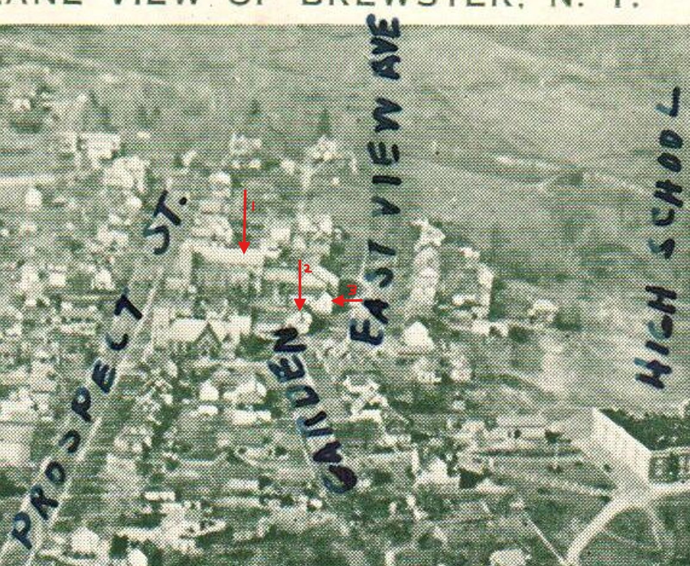
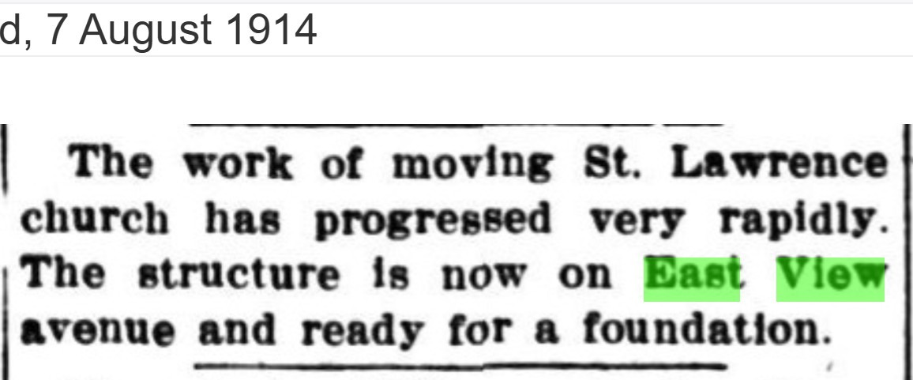

St. Lawrence O’Toole
The parish that organizes the south end of Eastview Avenue: founded in 1871 on a lot the Gilroys conveyed, rebuilt in stone in 1915, and grown across the block through a century of moves and school expansions.
I. At a glance
St. Lawrence O’Toole is the institution around which the south end of Eastview Avenue organized itself. It began in 1871 as a mission of St. Joseph’s in Croton Falls, in a remodeled frame building on Prospect Street — on a lot conveyed by the Gilroy family, whose Eastview home had been the village’s first Catholic worship site. Over the following nine decades the parish replaced that wooden church with a stone one (1915), moved the old church bodily onto Eastview Avenue (1914) and remodeled it into a school (1921), built a purpose-built school and convent (1931), and expanded again in 1959 — an expansion that required moving a neighbor’s house, the Ganong residence, off a parcel that had once held the Morehouse sash-and-blind factory.
That is why this piece exists as a hub. Three separate property stories on this short street — a founding family, a factory, and a moved house — all converge on the parish’s growing footprint. The detail of each lives in its own piece; what follows is the institutional spine they hang from.

II. Founding, 1859–1871
Catholic worship in eastern Putnam predated any church building by two decades. Per the parish’s own records (printed in 1922) and the county histories, Jesuit fathers from Fordham attended the territory first; Rev. Charles Slevin took charge of a parish stretching from Mt. Kisco to Millerton in 1859, and Rev. John Orsenigo followed in 1865. In Brewster, with no building, Mass was said in the homes of members — and parish tradition, in print since at least the 1990 bicentennial volume, places those gatherings in the Eastview Avenue home of the John Gilroy family.
The contemporary account is Roberts’s centennial Historical Sketch of 1876, written five years after the founding by someone present for it:
The Catholic Church was erected in the same year, 1871. Its first minister was Father McKenna, now deceased. The second, his successor, and the present pastor of the Church is Father Daly.
— Roberts, Historical Sketch (centennial address), 1876
Rev. Lawrence McKenna, who became pastor at Croton Falls around 1870, set up the Brewster mission. A small Prospect Street building — a remodeled, formerly unfinished house — was dedicated in 1871 and given the name of the twelfth-century Irish saint Lawrence O’Toole. (Sources differ by a year on the building: Roberts 1876 and the parish’s own records say 1871, while Bailey 1944 and Zimm 1946 say 1870 — most likely the difference between McKenna’s 1870 action and the 1871 dedication. The bicentennial volume gives both: McKenna acting in 1870, the church dedicated in 1871.) The lot itself reached the parish through the Archdiocese of New York, by a documented chain summarized in Section V below.
One name belongs to the contemporary record and not the later one: Roberts 1876 makes Father Daly the sitting pastor in 1876, and the 1922 parish history confirms him (noting he died after a fall from his horse). Haight 1912, writing far later, skips from McKenna to Healy and omits Daly entirely — a reminder that the nearer source is sometimes the fuller one.
III. The wooden church and the stone church
The remodeled frame building served Brewster’s Catholics for more than forty years. A period postcard preserves it — Gothic windows, a bell tower added later under Fr. Henry, an iron fence along the street:

The parish was formally organized in 1878 under its first resident pastor, Fr. Patrick Healy, who had built St. Bernard’s at Towners while at Pawling and now served both; in Brewster he enlarged the church, bought a rectory across the street, and acquired the Walter Brewster House on Oak Street (which became St. Lawrence Hall). Fr. Michael Henry extended the church and added its tower in 1890. By the turn of the century the frame building had been outgrown: Fr. Richard Burns (1899–1912) began raising funds for a new church, and his successor Fr. Thomas Phelan (1912–1924) — a priest with a national reputation as a Catholic historian, who also taught at the Maryknoll seminary — built the present stone church.
That construction set off the move that ties the parish to Eastview Avenue. To clear the Prospect Street ground for the stone church, the old wooden church was physically relocated onto Eastview in 1914:
The work of moving St. Lawrence church has progressed very rapidly. The structure is now on East View avenue and ready for a foundation.
— Brewster Standard, August 7, 1914

The building itself rose quickly through 1914. By the parish’s 2021 account, the architect was Robert J. Reiley — who designed roughly two dozen churches and later worked on St. Patrick’s Cathedral — and his design was English Gothic: about 50 by 109 feet, with a clerestory and a tower some sixty feet high, carrying over several stained-glass windows from the old wooden church. On Sunday, July 19, 1914, Fr. Phelan turned the first sod before an estimated three hundred people. The general contractor was John Kennedy & Co. of New York City; the heavy granite was quarried barely a quarter-mile away, at Charles W. Griffith’s works on Marvin Hill behind the railroad station, and hauled to Prospect Street by the horse-team of parishioner Terence Gallagher — father of Marguerite Gallagher, who at her death in 2003, aged 105, was the parish’s oldest member. The cornerstone was laid October 4, 1914. (These construction particulars rest on the parish’s 2021 anniversary account and are carried here as parish history.)
The stone church was dedicated on June 27, 1915, and stands today at 31 Prospect Street. Its construction is also the backdrop to the most-quoted moment in the parish’s lay history: at Mary Gilroy’s funeral in January 1914, Fr. Phelan credited the Gilroys with the parish’s establishment and announced a memorial tablet to John Gilroy for the new stone edifice then rising. A tangible trace of the family survives in the building itself: a clerestory window on the north side of the nave, inscribed “Gift of John Gilroy” and carried over from the 1871 wooden church, was identified in 2026 (Fr. Gill) — a gift of glass distinct from the near-cost sale of the church lot.
IV. The school, and the reshaping of Eastview, 1921–1959
The moved wooden church found a second life. In 1921 it was remodeled into classrooms — the Brewster Standard noting that the new school building “formerly housed the Catholic church” and stood “on Eastview avenue, in the rear of the present church” — relieving a crowded village school. A decade later the parish built purpose-built quarters: under Fr. Thomas Barry (1924–1951), excavation for a new convent and school on the Eastview grounds began in 1931 (contractors O’Brien and Kinkel), and the St. Lawrence parochial school opened that year with four classrooms, staffed by the Divine Compassion Sisters of White Plains.
The parish’s final great expansion came in 1959. A $500,000 program added ten classrooms for 400 children, a new auditorium-chapel facing Prospect Street (joined to the school by a covered bridge), and a renovated convent. That addition needed land at the south end of Eastview — and the parcel it took had a deep prior life on this street. It had held the Morehouse sash-and-blind factory into the 1920s; after the factory relocated, the George Ganong house stood on it; and in 1959 that house was lifted and moved down Eastview to clear the ground. The convergence of factory, house, and parish on one parcel is the subject of its own piece.
V. The land — how the parish parcel was assembled
The present St. Lawrence parcel (tax 67.26-2-16, fronting both Prospect Street and Eastview Avenue) is a consolidation of lots acquired across nearly ninety years. Its documented core and stages:
The detail of the 1871–1886 chain — including the finding that the Gilroys sold the church lot at very near cost rather than donating it — is set out in the Gilroy House piece. The 1959 acquisition deeds, which would confirm the grantors of the school-addition land, are noted as Open Research below.
VI. Around the parish
A few institutions orbited the church closely enough to belong to its story. The St. Lawrence Council of the Knights of Columbus, No. 1495, was established in Brewster in June 1910 with Fr. Burns’s help; Fr. Phelan was prominent in the order and became its State Chaplain. In 1922 the Knights bought the Walter Brewster House — the Oak Street house Fr. Healy had acquired for the parish, where his sister Mrs. Margaret Spence had lived — and kept it as their home for fifty years, until it passed to the Landmarks Preservation Society in 1972. The 1990 bicentennial volume also records the parish’s daughter mission at Putnam Lake, the Sacred Heart church built in 1934 through the generosity of the Spencer Hance family and dedicated by Cardinal Hayes — one of the comparable lay-donor stories that, unlike the Gilroys’, reached print in its own time.
The parish kept its hundredth year in 1978, not 1971 — dating its century from the 1878 organization rather than the 1871 first church. On November 5, 1978, Cardinal Cooke, Archbishop of New York, was principal celebrant of the centennial Mass, with the Brewster-born Fr. Thomas McGarry preaching, and a parish-history book was prepared for the occasion. It is that 1978 book — not, as once supposed, a 1971 one — from which the Ganong house-move photograph comes.
The 1959 acquisition deeds. Liber 513/333 (with ~$24 in revenue stamps, implying a ~$22,000 purchase) and 514/70 should name the grantors of the school-addition land and confirm, in the deed description, that it was the former Morehouse factory parcel.
The Daly pastorate. Father Daly is attested in 1876 (Roberts) and 1922 (Henry obituary) but omitted by Haight 1912. His dates and the boundary between his service and Fr. Healy’s 1878 residency are unfixed.
The 1870 vs. 1871 dating. The one-year discrepancy across secondary sources is most likely the gap between McKenna’s 1870 action and the 1871 dedication, but the precise milestones each source used are not certain.
Image rights. The strongest later images of the parish — the photographs in the 1990 bicentennial volume and the 1978 parish 100th-anniversary book — are under copyright; the move photograph from that book is reproduced on the Ganong page by permission of the parish. The period postcards and pre-1929 clippings used above are in the public domain.
Sources Consulted
- Roberts, Historical Sketch (centennial address, 1876) — the church “erected… 1871,” Father McKenna (deceased), Father Daly as sitting pastor. The closest source to the founding.
- Obituary of Rev. Michael J. Henry, Brewster Standard, October 6, 1922 — the parish’s early history from its baptismal records: the missionary chain, the 1871 Prospect Street purchase (“John Gilroy being the supposed purchaser”), the pastoral succession, Fr. Henry’s tower and Eastview land purchases, and the wooden church’s use until the new church.
- Brewster Standard clippings: August 7, 1914 (the church moved to Eastview); October 1921 (“School Now Has Plenty of Room” — the moved church remodeled for grades); January 23, 1931 and the 1931 “Forty Years Ago” note (excavation for the convent and school); November 5, 1959 (“St. Lawrence Plans School Addition”); November 2, 1978 (“Cardinal Cooke due in Brewster” — the parish’s 100th-anniversary celebration, dating the centennial to the 1878 organization).
- Haight 1912, Historical and Genealogical Record, Dutchess and Putnam Counties — pastoral succession with dates (Slevin 1850; McKenna; Healy Jan 1878; Smythe assistant to 1881; Henry 1889; Clancy 1896; Burns 1899), the $3,000 rectory, and the $11,000 raised toward the new church by 1912. Omits Father Daly.
- Bailey 1944, Sketch of Brewster, and Zimm 1946, Southeastern New York — first services 1850 (in members’ homes); 1868 cemetery; first frame church on Prospect Street (dated 1870); 1880 parish division; 1915 stone church; 1931 parochial school. Pelletreau 1886 and Beers 1897 omit the parish.
- The Town of Southeast 1788–1988 (Town of Southeast Bicentennial Commission, 1990) — the fullest institutional narrative: McKenna (1870) and the Gilroy-home Masses; the 1871 dedication; Healy as first resident pastor (1878) and the Walter Brewster House; Henry’s 1890 tower; Burns and Phelan and the stone church; Barry and the 1931 school in the moved wooden church; the K of C and Putnam Lake histories. Copyrighted; paraphrased here.
- St. Lawrence O’Toole 100th-anniversary account (parish bulletin series, Tina Grant, 2021) — the source for the 1914 construction particulars: architect Robert J. Reiley’s English Gothic design, the July 19, 1914 first sod, contractor John Kennedy & Co., the Griffith granite from Marvin Hill, and Terence Gallagher’s hauling team. A modern devotional retelling; copyrighted, paraphrased here and carried as parish history.
- Sanborn fire-insurance maps of Brewster (1920, 1931) — the St. Lawrence church, the moved wooden church/school on Eastview, and the south-Eastview parcel that passed from Morehouse to the parish.
- Putnam County Clerk deed chain — Liber 50/455, 50/492, 66/402 (the church lot); 1959 acquisitions 513/333 and 514/70; modern parcel 67.26-2-16. Detailed in the Gilroy House piece.
- This hub gathers the parish’s institutional timeline so the property-level pieces can stay focused. Dates and pastoral details that vary between sources are presented with the disagreement visible. See the project methodology.
Research by Rob G. · Eastview Avenue Series